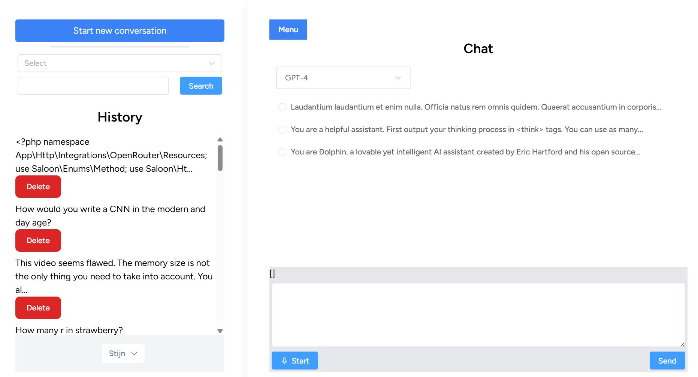

Ik heb deze zelf gebouwd omdat andere oplossingen niet de recursieve geschiedenis bijhielden. Het gebruikt Laravel met Vue. Inertia is de laag tussen de twee. Achterligend word een queue systeem gebruikt die dan met reverb de nieuwe update toont. Het gebruikt strategy pattern om verschillende AI api services te kunnen aanspreken (OpenAI, Groq, Deepinfra, Deepseek, Firwork, Together, Antrhopic, Mistral). Ik gebruik saloon voor alle API connecties te beheren behalve voor OpenAI waar ik een package voor gebruik.
Omdat ik geen ChatGpt Plus heb, heb ik zelf een Gradio web app gemaakt die de GPT-1 image generatie gebruikt via de API.
CodeVersie 3 is een migrate van versie 2. We hebben eerst een nieuw laravel project aangemaakt voor de nieuwe folder structuur. Dan hebben we de code van versie 2 gemigreerd naar de nieuwe folder structuur. Dan hebben we Filament geüpgraded van 2 naar 3. We hebben de UI veranderd door meer een collage stijl te gebruiken. Er is ook een wereld map toegevoegd die de concerten toont waar CL is geweest.
Where is CL ?Arma 3 heeft het mogelijk gemaakt om cruise control of een speed limit op voertuigen te zetten. Maar sinds het zo laat in de game is toegevoegd, is er geen UI voor gemaakt. Daarom heb ik dit zelf gemaakt. Ik heb hiervoor ook nog bugs aangemaakt bij Bohemia Interactive. Deze zijn allemaal opgelost. De downloads zit boven 10% van unique viewers. Wat een mooie percentage is.
Darkbelg Speed Control CodeOmdat er discussie was om een nieuwe time tracker te gebruiken in plaats van excel. Heb ik zelf de oefening gedaan of ik dit zelf in een week kon maken. En dit is het resultaat. Later heb ik laravel octane toegevoegd voor beter performance.
Dit is een Vue web app die het model whisper van OpenAI gebruikt met behulp van een API. Het opnemen van audio en creeren van een bestand worden allemaal binnen de browser zelf gedaan. Je hebt een key nodig van OpenAI om het te gebruiken.
Translate CodeDit is een laravel applicatie in combinatie met Vue die request stuurt naar de Youtube API. Ik heb dit gebouwd om vue beter te leren kennen. En voor een makkelijkere manier om youtube videos en kanalen te kunnen filteren. Dit is nog een work in progress.
AgnodyceDit is een opdrachtstelling voorbeeld van een potentiele werknemer. In de README kan je alle functionele vereisten vinden en een conclusie.
WebshopEen laravel 8 project om het framework beter te leren kennen. De site toont videos en fancams van voorbije concerten van kpop idol CL. Er word gebruik gemaakt van feature testing, eloquent, breeze package voor authentication en blade. Er word via de youtube api meta data opgehaald van de videos en deze word dan opgeslagen in de database. Op het eind werd er ook fillament-php gebruikt als backend voor makkelijker beheer van nieuwe videos.
Code on GithubDe pizzawebshop was een eindopdracht voor de php opleiding. Het is opgebouwd volgens het MVC
principe en Twig word gebruikt als template engine.
Het Schryverke is een kopieer en print centrum. Ik heb de website vernieuwd als oefening en om er in ruil gratis te printen.
View Project Code op Github